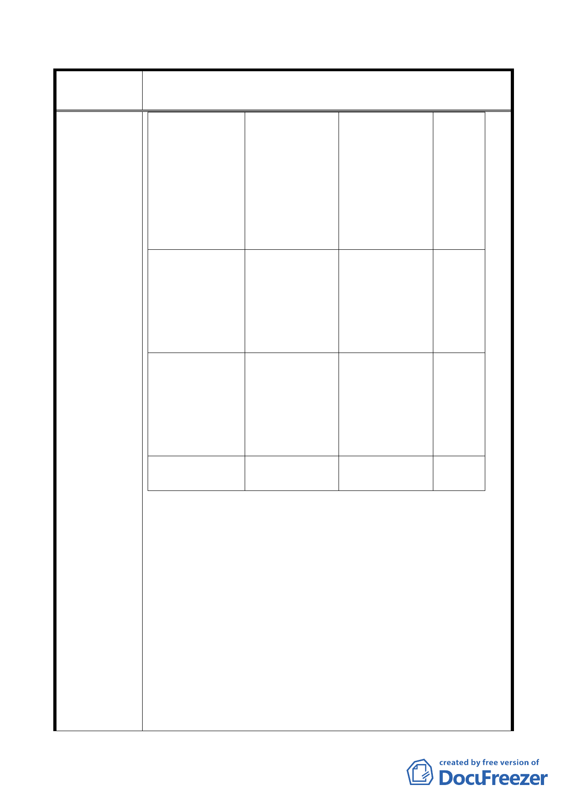

修訂本市都市計畫「臺北市山坡地開發建築要點」為「臺北市
案 名 都市計畫劃定山坡地開發建築管制規定」案
法規目的
取得建照興建
房屋
土地發返土地
所有權人各自
管理利用，重
劃會即解散，
並無涉及房屋
興建
地，而
山坡地
開發建
築規定
只有二
大項就
能取得
建照。
法令依據
都市計畫法第 平均地權條例
26 條
第 58 條、市地
重劃辦法、獎
勵土地所有權
人辦理市地重
劃辦法
主管機關
都市發展局暨 地政局暨土地
建管處
開發總隊
綜觀上表分析，兩者是完全不同法源，從開始辦理到結束沒有
一項是一樣作業（程序）及待遇（土地所有權人權益）。有鑒於
此，本會多年前即向 貴府多次陳請修訂但未得 貴府回應，無
奈於去年（100年）向行政院秘書長陳情，蒙行政院秘書長邀集
行政院法規會主委、內政部營建署及 貴府官員… 等，經與會
長官闡明原「山開要點」（台北市山坡地開發建築要點）及輔助
無法辦理市地重劃之地區而訂定的好法規，如今牽制市地重劃
有本末倒置的情形，如市地重劃已完成，各宗土地依該都市使
用管制規定申請使用，與「山開要點」有何關係，連一點關係
都沒有。再者，如硬要納入市地重劃，亦應有日落及日出不溯
及既往條款，一般以修訂之公告日前經市府核定計畫之執行方
式（如兩級都委會、環評、重劃計畫書… 等）尚稱合理，以符
法規修訂，經與會各單位均無意見（如附件l ）。故本條文建議
修訂：民國88 年6月7日前經台北市政府核定通過兩級都市細部
- 15 -